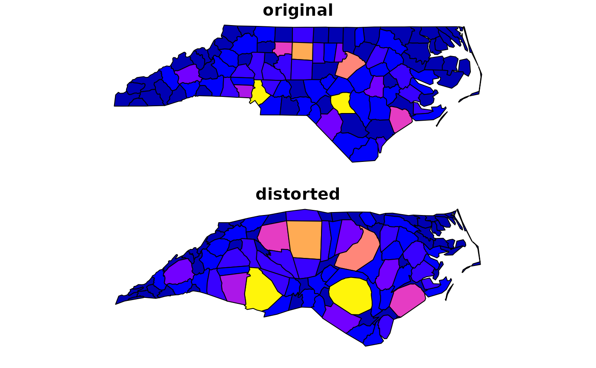

Construct a continuous area cartogram by a rubber sheet distortion algorithm (Dougenik et al. 1985)
Usage
cartogram_cont(
x,
weight,
itermax = 15,
maxSizeError = 1.0001,
prepare = "adjust",
threshold = 0.05,
verbose = FALSE
)
# S3 method for class 'SpatialPolygonsDataFrame'
cartogram_cont(
x,
weight,
itermax = 15,
maxSizeError = 1.0001,
prepare = "adjust",
threshold = 0.05,
verbose = FALSE
)
# S3 method for class 'sf'
cartogram_cont(
x,
weight,
itermax = 15,
maxSizeError = 1.0001,
prepare = "adjust",
threshold = 0.05,
verbose = FALSE
)Arguments
- x
a polygon or multiplogyon sf object
- weight
Name of the weighting variable in x
- itermax
Maximum iterations for the cartogram transformation, if maxSizeError ist not reached
- maxSizeError
Stop if meanSizeError is smaller than maxSizeError
- prepare
Weighting values are adjusted to reach convergence much earlier. Possible methods are "adjust", adjust values to restrict the mass vector to the quantiles defined by threshold and 1-threshold (default), "remove", remove features with values lower than quantile at threshold, "none", don't adjust weighting values
- threshold
Define threshold for data preparation
- verbose
print meanSizeError on each iteration
References
Dougenik, J. A., Chrisman, N. R., & Niemeyer, D. R. (1985). An Algorithm To Construct Continuous Area Cartograms. In The Professional Geographer, 37(1), 75-81.
Examples
library(sf)
#> Linking to GEOS 3.12.1, GDAL 3.8.4, PROJ 9.4.0; sf_use_s2() is TRUE
library(cartogram)
nc = st_read(system.file("shape/nc.shp", package="sf"), quiet = TRUE)
# transform to NAD83 / UTM zone 16N
nc_utm <- st_transform(nc, 26916)
# Create cartogram
nc_utm_carto <- cartogram_cont(nc_utm, weight = "BIR74", itermax = 5)
# Plot
par(mfrow=c(2,1))
plot(nc[,"BIR74"], main="original", key.pos = NULL, reset = FALSE)
plot(nc_utm_carto[,"BIR74"], main="distorted", key.pos = NULL, reset = FALSE)
